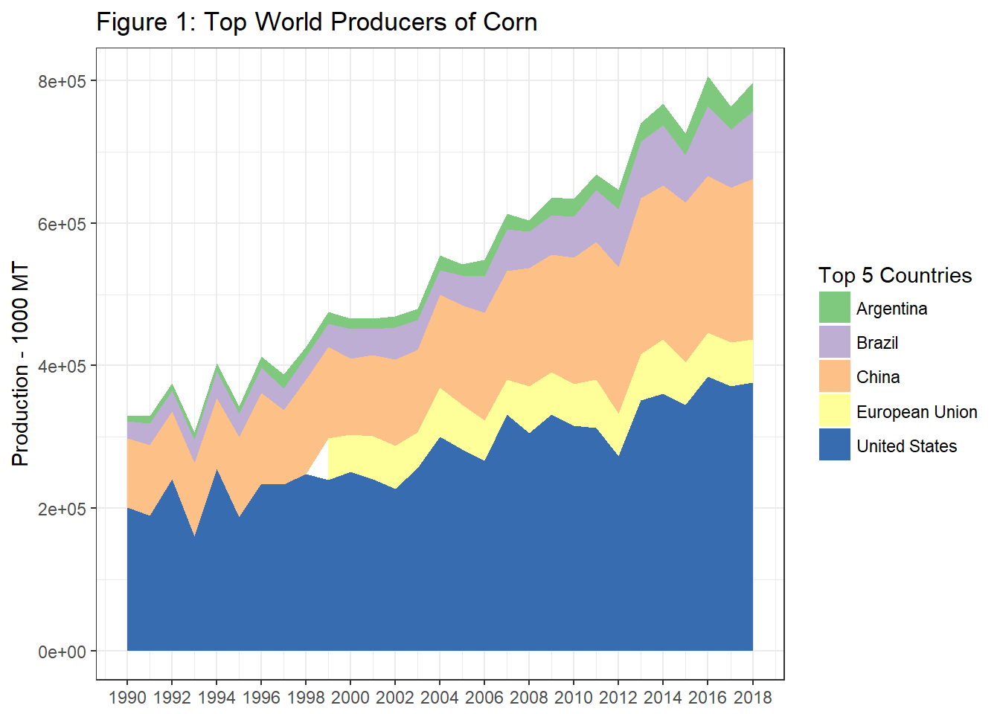
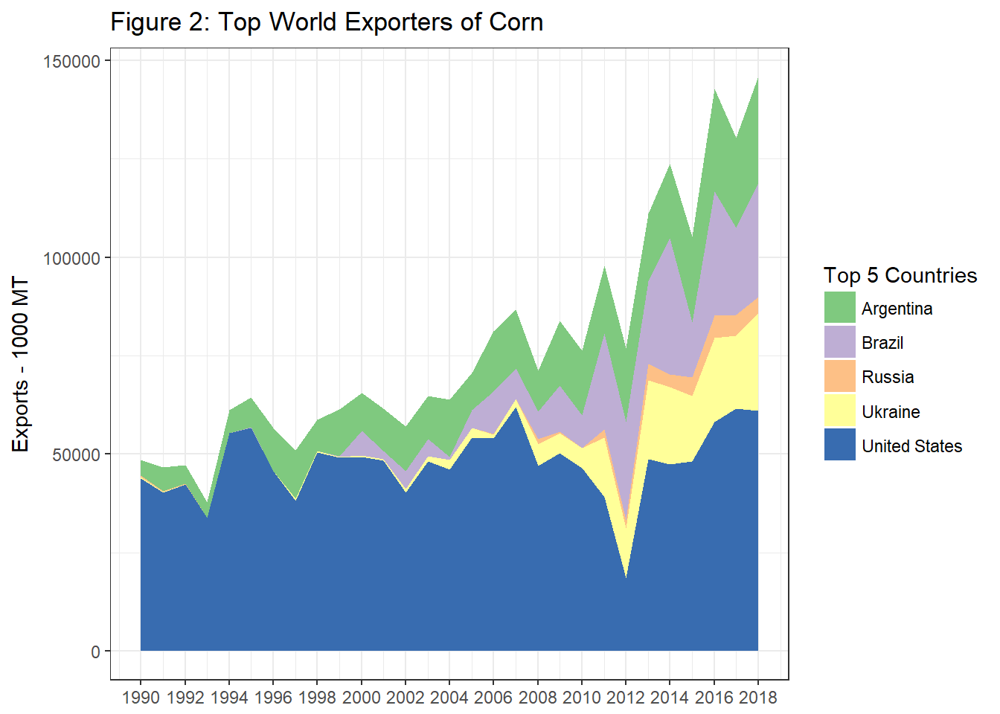
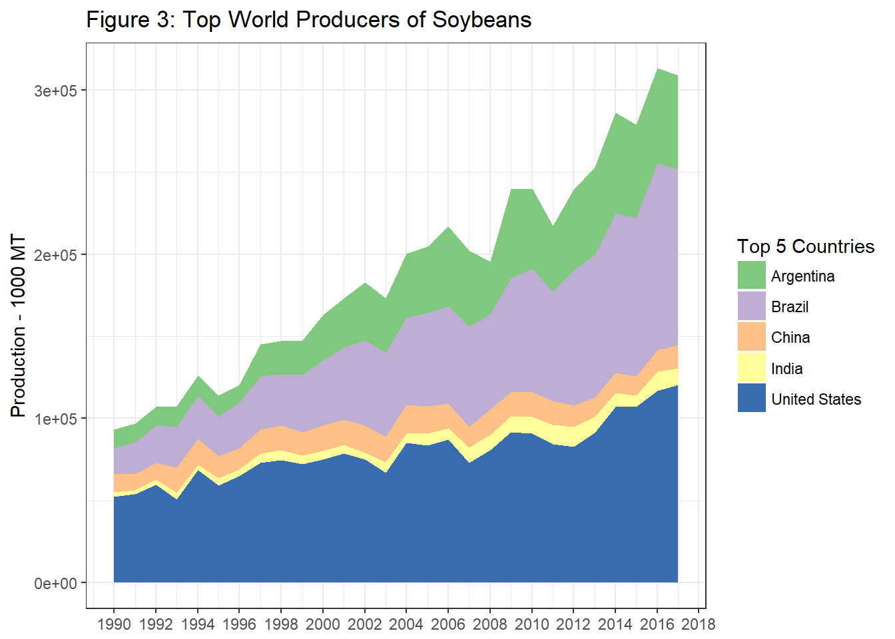
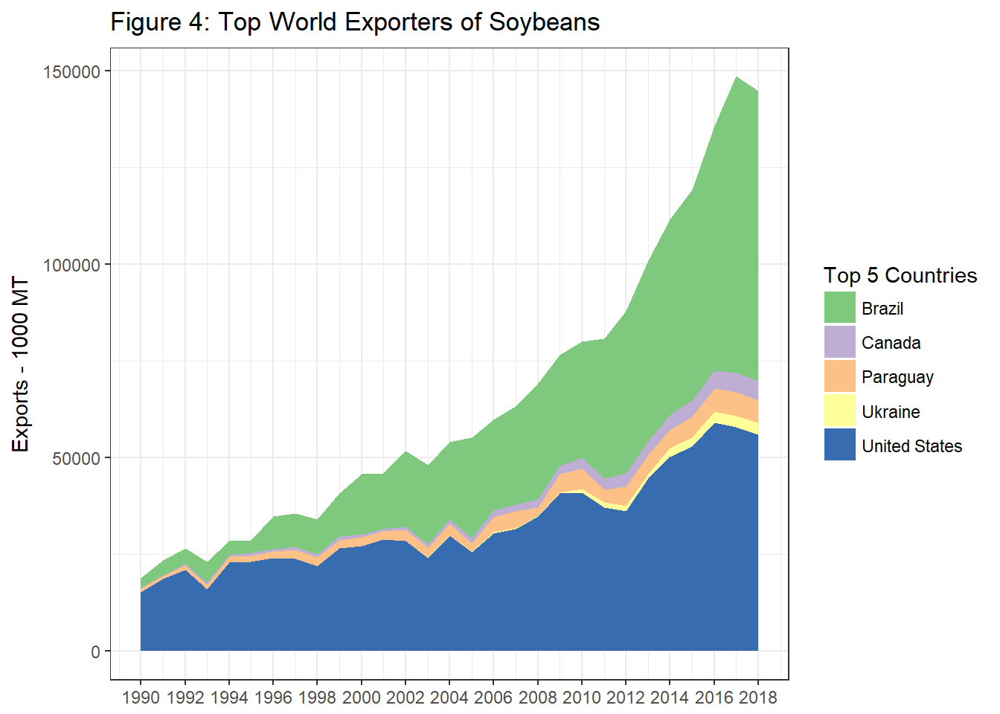

Chapter 12 South American Production
Over8 the last twenty years Brazil and Argentina have grown in prominence on the world stage and are currently among the most important growers of soybeans and corn, particularly so for soybeans.
In figure 1 we have plotted the production since 1990 of the world’s top five producers of corn. Argentina, Brazil, China, the European Union, and the United States round out this group. A clear pattern of increases over time is notable particularly for the U.S., China, and Brazil, generating a dramatic upward trend in the production from this top group.
12.1 Production of Corn
Data for figures 1-4 come from the USDA FAS World Production Supply and Demand historical data-sets for grains and oilseeds.

Figure 2 plots the top five countries by exports. Here we see China and the EU dropping out of the top five with Russia and Ukraine taking their place. While U.S. exports have been mostly flat over this time period, exports from Brazil have been expanding rapidly since about 2004.

Next, in table 1, we present the top producers of corn in 2017.
Table 1: Top 10 World Producers of Corn, 2017
12.2 Production of Soybeans
Now we turn our attention to the soybean market. In figure 3 we present production since 1990 from the top five countries. Here, the importance of Brazil and Argentina is much more obvious. While production in the U.S. has a visible upward trend, Brazil and Argentina are really increasing at a rapid rate.

In figure 4 we plot the exports from the top five countries. From figure 3 to 4 China and India drop out and are replaced by Canada and Paraguay. The growth in soybean exports from Brazil is quite remarkable in this chart.

Table 2 shows the top ten producers of soybeans in the World. Here we see that Paraguay and Bolivia are present in the top ten as well.
Table 2: Top 10 World Producers of Soybeans, 2017
12.3 South American Production Seasons and Trade Flows
Since South America experiences summer when we in the North America experience winter and vice versa, North American and South American production is nicely complementary in providing corn and soybeans for the export market. We noted in Chapter 9 and 10 that U.S. corn and soybean exports are at their highest levels during the 2nd quarter of the marketing year - right after harvest. During this time, the planting and growing seasons are underway in South America, and the heavy export season from harvesting the previous crop is winding down.
Then, South American farmers are harvesting during our planting and growing seasons (March through June).
The seasonality is a boon for importers because they have the opportunity to buy for seasonally low harvest-time prices twice per year rather than just once per year.
12.3.1 Brazil
Brazil, being quite close to the equator, enjoys the ability to double crop most every year. Typically, farmers plant soybeans as the first crop because if they plant soybeans first they get a second crop of corn. If they plant corn first, there is not enough time to get a second crop of soybeans. However, yields of first crop corn are higher then yields of second crop corn due to when the rainy season comes, so in some places farmers choose to plant one crop of corn and forego double cropping.
Figure 6 show production intensity of soybeans by state, and also provides a calendar of when planting and harvest activity of first crop soybeans are taking place.

Figure 6: Regional Brazillian Soybean Production Seasons
Figure 7 shows the same for second crop corn.

Figure 7: Regional Brazillian 2nd Crop Corn Production Seasons
While figure 8 shows the regional production intensity of first crop corn. Notice the highest production of first crop corn is located in regions that have no second crop in figure 7. This shows that in the east, where managing a second crop is more difficult, farmers are more apt to plant a single crop of corn.

Figure 8: Regional Brazillian 1st Crop Corn Production Seasons
12.3.2 Where to find information on Brazilian Crops
For information about Brazillian production the National Supply Company (Conab) is the main resource. They publish crop reports monthly, just like the USDA’s WASDE report. Typically, the Brazillian report is released a couple of days before the WASDE report, so if there is information from Brazil that will affect world stocks or production, these reports will move prices in the U.S.
A calendar of release dates for 2016/2017 and 2017/2018 marketing years is found here. Note that Google Translate is helpful here. Click Choose File, and paste the URL of any .pdf produced by CONAB.
The monthly crop reports can be found on the Conab website. Ask Google to automatically translate the page to English for you. Navigate through the Produtos e Servicos menu, through Crops, and choose Harvesting Safra.
This brings up a list of reports listed in reverse chronological order by release date. Look for a row of the form 1st Survey - Harvest 2017/2018-Grains. In the product column will be Food. There are three kinds of reports, Food (which contains grains and oilseeds like corn and soybeans), Coffee, and Sugar Cane. Since the food report is released once per month, the most recent report should always appear on the first page of the table.
Area Planted, Yield, and Production
On p 98, table 36 Estimates are given for area planted to soybeans. Below, we have reproduced table 36 from the October 2017 report. Decimals are marked with ‘,’ and 1,000’s are marked with ‘.’ - just the opposite of the convention of most English-speaking traditions.
From the table we learn that for the country as a whole (bottom row) soybean plantings are up about 2.7% (1.6% - 3.8% low to high range), but yields are expected to decrease by 8.6%. This leaves productino estimates for the 2017/2018 crop in the range of -7.1% to -5.1%.
12.3.3 Argentina
Argentina is more similar to the U.S. in latitude, so they are only able to plant a single crop. Planting of corn begins in September and harvest runs from March until May.

Figure 9: Regional Argentinian Corn Production Seasons
Planting of soybeans begins in November and harvest runs from April to May.

Figure 10: Regional Argentinian Soybean Production Seasons
Figure 11: Regional Argentinian Production of Major Crops
| Spanish - English Crop Names | |
|---|---|
| Trigo | Wheat |
| Cebada | Barley |
| Girasol | Sunflower |
| Soja | Soybean |
| Maiz | Corn |
| Sorgo | Sorghum |
12.3.4 Where to find information on Argentinian Crops
The Bolsa de Cereales is the grain exhcange in Argentina. They undertake the responsibility of producing crop reports. The reports most closely followed are the Weekly Agricultural Report, which tells the planting or harvest progress, and gives a general update about market conditions. The other report is the Esdtado Y Condition de Cultivos (ECC), which is released once per month. This has more detailed estimates about planting and growing conditions.

Figure 12: Location of Reports on Bolsa de Cereales
12.4 Exercises
The exercises for this chapter illustrate four main skills.
How to use Google Translate to read crop reports in languages other than English.
How to use Tabula to extract data from PDF files into CSV files.
Do basic operations with the command line prompt.
How to use Excel’s VLOOKUP function.
We will go to the CONAB website, find crop reports from December 2016, January 2017, and Feburary 2017 - the key months of the 2016 soybean crop in Brazil. Then we will use Tabula to extract the main soybean table (soja) from each report and download into a CSV file. Then we will use the command line to copy the CSV files with each month’s soybean table into one file. From there we will use Excel’s VLOOKUP function to make a clean time series of the monthly production projections.
There is a lot of data locked inside PDF files, and after these excercises you have the ability to unlock and analyse them. For example, CONAB does provide annual historical data for their final crop estimates, but they do not provide an archive of the monthly projections in a nice accessible format (CSV files).
Detailed Instructions:
Go to Tabula, download the software to your computer, and open the web app if does not automatically open in your browser.
Create a new folder in your downloads folder named ‘ace427-ch12’ or similar.
Go to the Crop Surveys CONAB page and use the pagination to find the surveys relesed in December 2016, January 2017, and Feburary 2017 (Don’t forget to turn on Google Translate).
For each report do steps 4, 5 and 6.
Open each survey’s PDF file into a new tab, then copy the link and paste it into your Tabula import prompt.
Identify the table that gives expectations for soybeans (soja) area planted, yield, and production. It is usually somewhere betwen table 36-40 and usually found somewhere around p 100.
Drag a rectangle around the table, click Preview and Export Extracted Data, then click Export. This downloads the selected data into your downloads folder.
After downloading the tables from each of the three reports, open your downloads folder and copy and paste these files the ‘ace427-ch12’ folder you created earlier.
Follow the youtube tutorials provided below to combine the three CSV files into one (Note that when you use the cd command you will be changing your directory to the ‘ace427-ch12’ folder that contains our CSV files).
Windows users
The same steps are found in example 1 of this website.
Mac Users
Remove the intermediate column headers, and create a column that identifies the month of the report.
Use Index and functions on arrays to create a series of the low estimate of total Brazil final production. Do the same for the high estimate.

Set up a place to put the values we will look up. Put ‘Brazil’ in cell
N4.Use the following index formula to pull the min extimate of production for Brazil. Remember to do
CRTL + SHIFT + RETURNto convert to an array formula. Drag across columns to fill in the other month estimates.
=INDEX($I$4:$I$75,SMALL(IF($N$4=$A$4:$A$75,ROW($A$4:$A$75)-MIN(ROW($A$4:$A$75))+1),COLUMNS($P4:P4)))
Note: To look up just one value we would have been able to use the VLOOKUP function, but since we wanted to return multiple values we needed the index function excecuted over an array.
- Repeat for the selected states.
Many thanks to Felipe Grimaldi Avileis, my teaching assistant for ACE 427 in 2017, for getting me up to speed on the basics of production in South America, and for showing me where to access supply and demand reports for Brazil and Argentina.↩